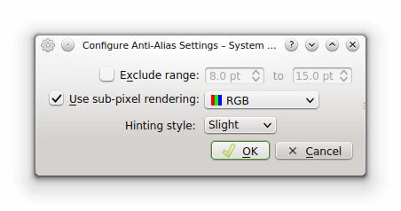

Eu tenho o KDE como meu ambiente gráfico favorito. Além de ser visualmente atraente, altamente configurável e muito fácil de usar. Mas como nem tudo é perfeito, nós as vezes encontramos alguns bugs chatos pra resolver. O bug em questão acontece após a instalação de alguns tipos de temas, deixando as fontes de todo o KDE mais finas e serrilhadas. Apesar disso ocorrer muito raramente, quando acontece, as fontes não voltam ao normal mesmo que as configurações de alti-aliased das delas sejam alteradas. Eu já presenciei esse erro no KDE 4.9, 4.12 e 4.13 (o que uso atualmente). Depois de quebrar a cabeça com o bug eu finalmente consegui corrigi-lo e compartilho com vocês os passos a serem seguidos. Inicialmente, vamos até o painel de configurações de fontes do KDE.
System Settings -> Application appearance -> Fonts
Onde está escrito "Use anti-aliasing" selecione a opção "Enable", como ilustra a figura a seguir.
Sem seguida, clique em Configure... Uma janela com algumas opções vai abrir. Deixe as suas configurações iguais as mostradas na figura abaixo e depois clique em OK.

Terminada as configurações acima, clique no botão em Apply e feche a janela de configurações. Você pode perceber que mesmo configurando as fontes, elas ainda permanecem serrilhadas. Então, o próximo passo é ajustá-las manualmente.
Vá para a sua pasta home/usuario e procure o arquivo .font.conf. Os arquivos cujo nome se inicia com "." são arquivos ocultos do sistema. Caso o arquivo .font.conf não apareça pra você, aperte o atalho Alt + . . Feito isso, os arquivos devem ficar visíveis.
Procure o arquivo .font.conf e o abra em um editor de texto. Feito isso, substitua todos os false que encontrar no arquivo por true e reinicie o sistema. Quando você logar novamente, verá que as fontes voltaram ao normal e não estão mais serrilhadas. Essa configuração deve ser feita apenas quando ocorrer esse bug com a fontes do KDE.
É isso pessoal. Até o próximo post.